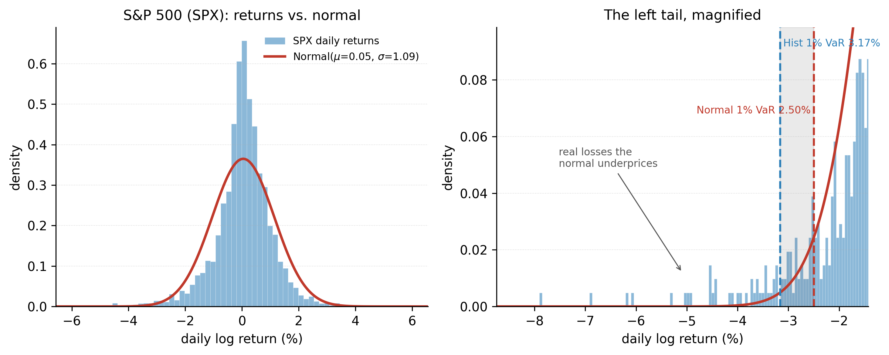
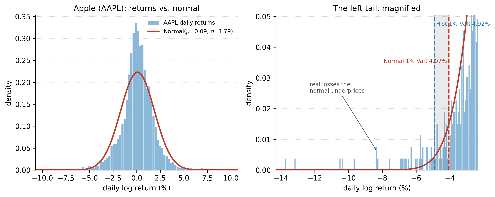
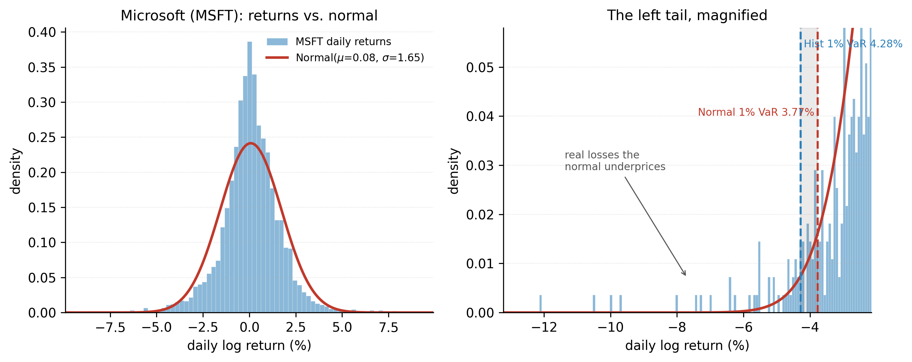
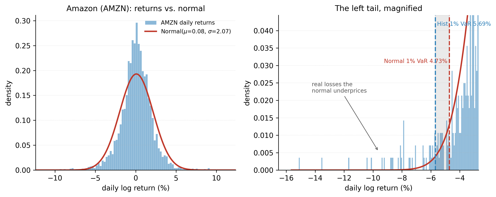
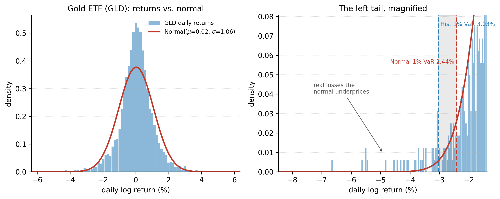
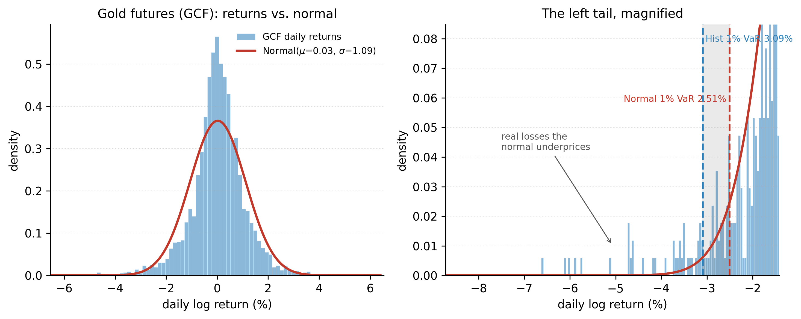
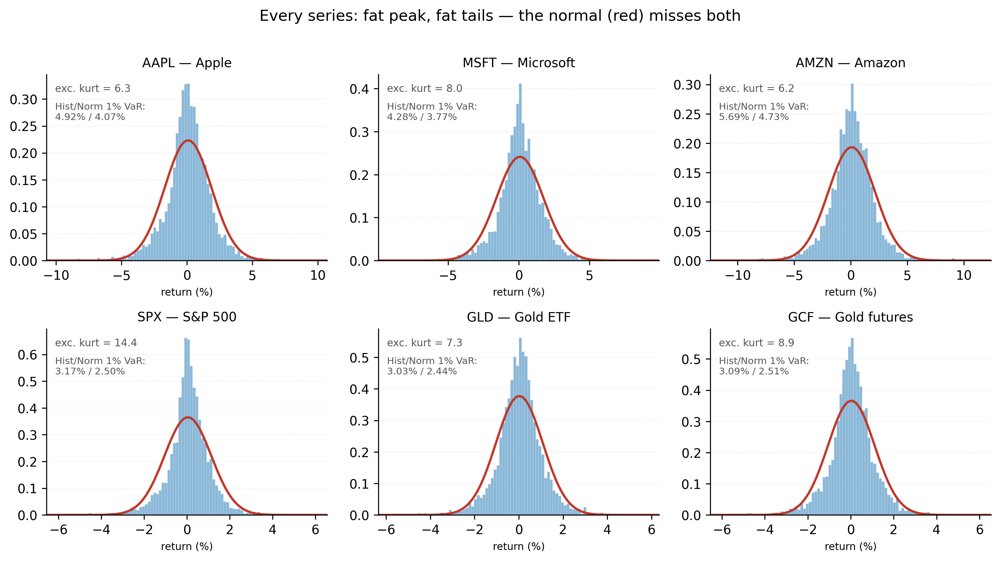
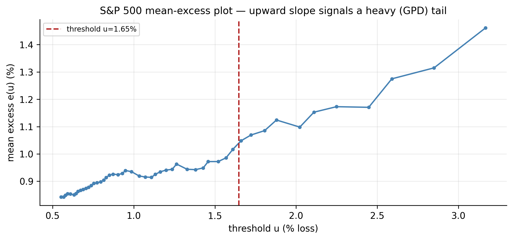
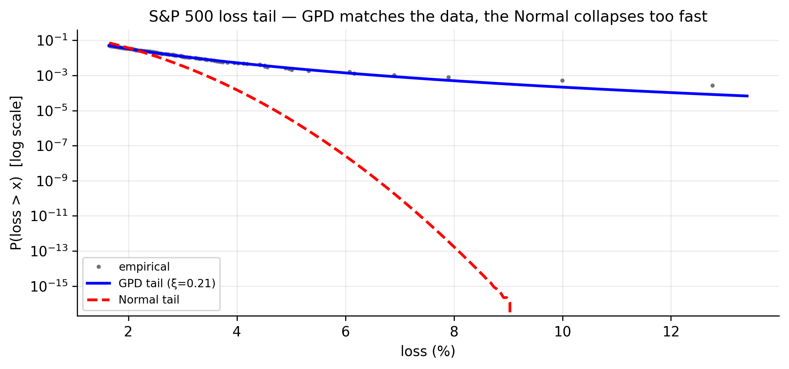

11 Extreme Values, Quantiles, and Value at Risk
The whole book has repeated one fact: financial returns are fat-tailed. This chapter is where that fact is finally turned into a risk number. We define Value at Risk (VaR), compute it four ways — RiskMetrics, an econometric (GARCH) approach, empirical quantiles, and Extreme Value Theory (EVT) — and see, starkly, how badly the Normal-based numbers understate the danger in the deep tail. The chapter’s own tail-fit figure (Figure 11.4) tells the story in advance: the Normal curve plunges ten orders of magnitude below where the S&P’s real losses actually sit.
11.1 What is Value at Risk?
Value at Risk (VaR) at level \(p\) over a horizon \(h\) is the loss that will be exceeded with probability \(p\). A 1-day 99% VaR of $1m means: on 99 days out of 100 the loss stays under $1m; on the 100th it may be worse.
Formally, if \(L\) is the loss over the horizon, \(\text{VaR}_p\) is the number with \(P(L > \text{VaR}_p) = p\) — the upper \(p\)-quantile of the loss distribution. Three ingredients are needed: the horizon (1 day, 10 days), the confidence (\(p = 1\%\) or \(5\%\)), and an estimate of the loss distribution. The methods of this chapter differ only in that last ingredient.
The simplest estimate is historical — the empirical quantile of past losses — and comparing it to the Normal estimate already exposes the problem:
| Ticker | Hist VaR 5% | Normal 5% | Hist VaR 1% | Normal 1% | Hist ES 1% | Normal ES 1% |
|---|---|---|---|---|---|---|
| AAPL | 2.71% | 2.85% | 4.92% | 4.07% | 6.80% | 4.68% |
| MSFT | 2.54% | 2.64% | 4.28% | 3.77% | 6.19% | 4.33% |
| AMZN | 3.11% | 3.32% | 5.69% | 4.73% | 7.82% | 5.43% |
| SPX | 1.65% | 1.75% | 3.17% | 2.50% | 4.63% | 2.87% |
| GLD | 1.67% | 1.72% | 3.03% | 2.44% | 4.26% | 2.80% |
| GCF | 1.69% | 1.76% | 3.10% | 2.51% | 4.49% | 2.88% |
At the \(5\%\) level the two agree; the Normal is even a touch higher. But at the \(1\%\) level the historical VaR pulls decisively ahead — the S&P’s real 1% loss is \(3.17\%\) against the Normal’s \(2.50\%\) — and the Expected Shortfall (defined below) diverges far more. The deeper into the tail we look, the worse the Normal does. VaR itself has a known flaw, which motivates that Expected Shortfall column: it says nothing about how bad losses beyond it can be.
The mismatch is easiest to see. Figure 11.1 plots the S&P’s daily returns against a normal with the same mean and standard deviation: identical spread, but the wrong shape — a taller, thinner peak and far too little mass in the tail. The right panel magnifies the left tail, where the normal’s \(1\%\) VaR (\(2.50\%\)) sits inside the true \(1\%\) loss (\(3.17\%\)): the real loss days beyond it are exactly the ones the bell curve treats as all but impossible.

The same diagnostic for every series tells the same story — each is fat-tailed, and its historical \(1\%\) VaR sits outside the normal’s. Flip through the tabs:






Across all six, the gap between the historical and normal 1% VaR is the same lesson in six different magnitudes: Figure 11.2 lines them up side by side.

r <- diff(log(read.csv("data/SPX.csv")$Adjusted))
hist_var <- -quantile(r, c(0.05, 0.01)) # historical VaR
norm_var <- -(mean(r) + qnorm(c(0.05, 0.01)) * sd(r)) # Normal VaR
es_1 <- -mean(r[r <= quantile(r, 0.01)]) # historical Expected Shortfallimport pandas as pd, numpy as np
from scipy.stats import norm
r = np.log(pd.read_csv("data/SPX.csv")["Adjusted"]).diff().dropna()
hist_var = -r.quantile([0.05, 0.01]) # historical VaR
norm_var = -(r.mean() + norm.ppf([0.05, 0.01]) * r.std()) # Normal VaR
es_1 = -r[r <= r.quantile(0.01)].mean() # historical Expected Shortfall11.1.1 A map of the four methods
Historical and Normal are the two crudest estimates, and beyond thin tails they share a deeper limitation: both are static. Each collapses the entire sample into a single unconditional number and so ignores the fact this book keeps returning to — volatility clusters, so the risk that matters is today’s, not the fifteen-year average. The rest of the chapter estimates the loss distribution more carefully, and it is easiest to read as a chain in which each method repairs a specific flaw in the one before it:
- RiskMetrics makes the volatility time-varying, so the number breathes with the market — but it keeps the normal assumption.
- The econometric (GARCH) approach fixes RiskMetrics’ two remaining faults: its forced unit persistence and its thin tail.
- Quantile methods stop modelling volatility altogether and target the single object every method is really after — a quantile of the loss distribution.
- Extreme Value Theory models the shape of the tail itself, the one region where every data-based method eventually runs out of observations.
We take them in that order, and each section states what it fixes and what it still leaves open.
11.2 RiskMetrics
11.2.1 What is RiskMetrics?
The smallest possible improvement over the static picture is to stop treating volatility as a constant. RiskMetrics does exactly that, and little more.
RiskMetrics (J.P. Morgan, 1990s) is a simple, industry-standard VaR method: model volatility with an exponentially weighted moving average (EWMA) and assume conditionally normal returns.
The volatility recursion is
\[ \sigma_t^2 = \lambda\, \sigma_{t-1}^2 + (1-\lambda)\, a_{t-1}^2, \qquad \lambda = 0.94 \text{ (daily)}, \tag{11.1}\]
which is exactly a GARCH(1,1) with \(\alpha_0 = 0\), \(\alpha_1 = 1-\lambda\), \(\beta_1 = \lambda\) — an IGARCH with persistence \(\alpha_1+\beta_1 = 1\) (Chapter 13 touched on integrated variance). Today’s variance is a decaying weighted average of all past squared returns, most weight on the recent ones. The VaR is then just a Normal quantile of today’s volatility, \(\text{VaR}_p = -z_p\,\sigma_t\) (the drift is ignored over short horizons). For our tickers the current one-day \(99\%\) figure is:
| Ticker | EWMA \(\sigma_T\) | RiskMetrics 99% VaR |
|---|---|---|
| AAPL | 2.11% | 4.92% |
| MSFT | 2.52% | 5.87% |
| AMZN | 2.27% | 5.27% |
| SPX | 0.95% | 2.20% |
| GLD | 1.73% | 4.02% |
| GCF | 1.76% | 4.08% |
RiskMetrics is simple and adapts to current conditions — the S&P’s low \(\sigma_T\) gives a tight \(2.2\%\) VaR because July 2026 was calm. Its two weaknesses are the two this book keeps returning to: it forces persistence to exactly \(1\), and it assumes normality, so it inherits the thin-tail error of Table 11.1.
11.2.2 Multiple positions
For a portfolio the volatility comes from the covariance matrix \(\Sigma\) of the positions: with weights \(w\), the portfolio variance is \(\sigma_p^2 = w^\top \Sigma\, w\) and \(\text{VaR}_p = -z_p\,\sigma_p\). Because correlations are below one, diversification lowers VaR: the portfolio’s risk is less than the sum of its parts. A 50/50 S&P–gold book illustrates it — the two are almost uncorrelated (correlation \(0.06\)), so the combined \(99\%\) VaR is \(1.79\%\), well below the \(2.47\%\) you would get by adding the two positions’ VaRs. The \(0.68\)-point gap is the diversification benefit, and it is why gold earns its place beside equities.
11.2.3 Expected Shortfall
Expected Shortfall (ES), or conditional VaR, is the average loss in the worst \(p\%\) of cases: \(\text{ES}_p = E[L \mid L > \text{VaR}_p]\). It answers “if we breach the VaR, how bad is it on average?”
ES fixes VaR’s blind spot — it accounts for the size of tail losses, not just their frequency — and unlike VaR it is coherent (a diversified book never has higher ES than the sum of parts). Under conditional normality it has a clean form,
\[ \text{ES}_p = -\mu + \sigma\,\frac{\phi(z_p)}{p}, \tag{11.2}\]
with \(\phi\) the normal density and \(z_p = \Phi^{-1}(p)\). The last two columns of Table 11.1 show the catch: because ES lives further out in the tail than VaR, the Normal underestimates it even more — the S&P’s historical 1% ES is \(4.63\%\) versus the Normal’s \(2.87\%\), a \(60\%\) shortfall. Regulators have moved from VaR toward ES for exactly this reason.
11.3 An econometric approach to VaR
The RiskMetrics volatility is a fixed-\(\lambda\) special case; the econometric approach replaces it with a properly estimated volatility model and a properly chosen innovation distribution — precisely the GARCH machinery of Chapters 8–10. The one-day VaR becomes
\[ \text{VaR}_{t}(p) = -\bigl(\mu + q_p\,\sigma_t\bigr), \tag{11.3}\]
where \(\sigma_t\) is the GARCH conditional volatility and \(q_p\) the \(p\)-quantile of the innovation — the Normal quantile, or (better, from Chapter 10) the fatter Student-\(t\) quantile. We already saw the payoff: Normal-innovation VaR was breached far too often; \(t\)-innovations restored honest coverage.
11.3.1 Multiple periods
For an \(h\)-day horizon, if returns are iid the variance adds, so volatility — and VaR — scale with \(\sqrt{h}\) (the square-root-of-time rule), with the drift scaling linearly:
\[ \text{VaR}_p(h) \approx \sqrt{h}\;\sigma\,(-q_p) - h\mu . \tag{11.4}\]
The S&P’s 10-day 99% VaR is thus roughly \(\sqrt{10} \approx 3.2\) times the one-day figure. Under GARCH the rule is only approximate: the \(h\)-step variance forecast mean-reverts (Section 9.5), so from an elevated start the true multiperiod VaR grows slower than \(\sqrt{h}\), and from a calm start, faster.
11.3.2 Expected shortfall under conditional normality
Combining the ES formula Equation 11.2 with a GARCH volatility gives a conditional Expected Shortfall that breathes with the market: \(\text{ES}_t(p) = -\mu + \sigma_t\,\phi(z_p)/p\). On a calm day the shortfall is small; after a shock it widens — the same adaptivity as the conditional VaR, now measuring the severity of tail events rather than their threshold.
11.4 Quantile estimation
The three methods so far are increasingly elaborate parametric machines: RiskMetrics bolts a normal onto an EWMA variance, and the econometric approach layers a GARCH and a Student-\(t\) on top. Before adding still more structure it is worth stepping back to the single idea sitting underneath all of them. Whatever the model, a VaR number is nothing but a quantile of the loss distribution — so the most basic question is how to estimate a quantile directly, with as few assumptions as possible. That question has two answers, one unconditional and one conditional, and between them they bracket everything else in the chapter.
11.4.1 Quantiles and order statistics
The \(p\)-quantile of a distribution is the value below which a fraction \(p\) of the outcomes fall. VaR is a quantile of the loss distribution, so estimating VaR is estimating a quantile.
The model-free estimate uses order statistics: sort the returns \(r_{(1)} \le r_{(2)} \le \cdots \le r_{(n)}\); the empirical \(p\)-quantile is about \(r_{(\lceil np \rceil)}\). Historical VaR (the left column of Table 11.1) is exactly this — no distributional assumption, which is its strength. Its weakness is the tail: the \(1\%\) quantile of \(3{,}770\) days rests on only \(\sim\!38\) observations, and the \(0.1\%\) quantile on fewer than four, so historical VaR is noisy exactly where it matters most and cannot speak to losses larger than the worst one observed. That limitation is the entire motivation for Extreme Value Theory below.
11.4.2 Quantile regression
Quantile regression models a conditional quantile of the response as a function of covariates — where ordinary regression models the conditional mean.
Instead of minimising squared errors, quantile regression (Koenker–Bassett) minimises the asymmetric check-function loss
\[ \min_{\beta}\ \sum_t \rho_\tau\!\bigl(r_t - x_t^\top\beta\bigr), \qquad \rho_\tau(u) = u\,\bigl(\tau - \mathbf{1}\{u<0\}\bigr), \tag{11.5}\]
which penalises under- and over-prediction unequally so that the fitted line is the conditional \(\tau\)-quantile. For risk this is direct: set \(\tau = 0.01\) and regress the return quantile on covariates such as lagged volatility or a volatility index, and you have a VaR that moves with the state of the market without assuming a distribution. It is a semiparametric middle ground between the fully parametric GARCH VaR and the fully empirical historical VaR.
11.5 Extreme value theory
Order statistics gave us historical VaR, but with a warning attached: the empirical quantile is built from data, and in the far tail the data simply run out. Quantile regression added covariates but still needs observations wherever we choose to look. Both fall silent exactly where the largest losses live — beyond the worst day yet seen. Extreme Value Theory is the branch of statistics built for that region: instead of counting tail observations it never has, it models the tail’s shape and extrapolates it outward.
11.5.1 A review of extreme value theory
Extreme Value Theory (EVT) describes the distribution of the most extreme observations, giving a principled way to model — and extrapolate into — the far tail where ordinary data run out.
The classical result concerns block maxima. Take the maximum of each block of \(n\) iid observations; the Fisher–Tippett–Gnedenko theorem says that, suitably rescaled, this maximum can only converge to the Generalized Extreme Value (GEV) distribution,
\[ G(x) = \exp\!\Bigl[-\bigl(1 + \xi\,\tfrac{x-\mu}{\sigma}\bigr)^{-1/\xi}\Bigr], \tag{11.6}\]
whose shape parameter \(\xi\) sorts all tails into three families: Gumbel (\(\xi = 0\), thin tails like the normal), Fréchet (\(\xi > 0\), heavy power-law tails), and Weibull (\(\xi < 0\), bounded). The single number \(\xi\) decides how fat the tail is.
11.5.2 Empirical estimation
To fit the GEV, split the losses into blocks (say, monthly), take each block’s maximum loss, and estimate \((\mu, \sigma, \xi)\) from those maxima by maximum likelihood. The sign and size of \(\hat\xi\) then classify the tail.
11.5.3 Application to stock returns
For financial losses the answer is always the same: \(\hat\xi > 0\), the Fréchet case — heavy, power-law tails, exactly the fat tails of Chapter 2 seen through the lens of extremes. We quantify \(\hat\xi\) precisely with the more efficient peaks-over-threshold method in Section 11.7; every one of our six series comes out Fréchet.
11.6 An extreme-value approach to VaR
This section sets out what EVT buys a risk manager — safe extrapolation, a clean multiperiod scaling law, and return levels — while stating the results in terms of a fitted tail. The tail itself is estimated in the next section, Section 11.7, using the more efficient peaks-over-threshold method, and the numbers quoted here are read back from that fit. Concept first; estimation next.
11.6.1 Discussion
The point of EVT for risk is extrapolation. Historical VaR cannot exceed the worst observed loss; the Normal has the wrong tail shape; but a fitted extreme-value tail can give a sensible VaR at \(0.1\%\) or \(0.01\%\) — probabilities so small that few or no observations reach them. EVT models the shape of the tail from the moderately-extreme data and projects it outward.
11.6.2 Multiperiod VaR
Extremes aggregate through their own scaling law: for heavy (\(\xi>0\)) tails the \(h\)-period VaR grows roughly like \(h^{\xi}\) times the one-period tail, slower than the number of periods but governed by the same shape parameter — a cleaner multiperiod rule than the Normal’s \(\sqrt{h}\) when the tail is fat.
11.6.3 Return levels
The \(N\)-period return level is the loss expected to be exceeded on average once every \(N\) periods — i.e. VaR at \(p = 1/N\). A “10-year return level” is the daily loss you would see about once a decade.
Computed from the S&P’s fitted tail (estimated by peaks-over-threshold in Section 11.7), the return levels are \(4.4\%\) once a year, \(8.5\%\) once a decade, and \(12.2\%\) once every 40 years — and that last figure lands right on the actual worst day in our sample (\(-12.8\%\)), a reassuring check that the extreme-value model is calibrated.
11.7 A modern approach: peaks over threshold
This is where the fitted tail promised above actually comes from. The block-maxima route behind the GEV is wasteful — it keeps one observation per block and discards the rest — so in practice the tail is estimated a different way, which we develop now and then feed back into the VaR and return-level formulas already stated.
11.7.1 Statistical theory
The peaks-over-threshold (POT) method models every loss above a high threshold \(u\), not just block maxima. The Pickands–Balkema–de Haan theorem says these exceedances follow a Generalized Pareto Distribution (GPD).
Block maxima waste data — one number per block. POT keeps every exceedance, and for a high enough threshold \(u\) the excess \(Y = X - u\) (given \(X > u\)) has the GPD
\[ P(Y \le y \mid X > u) = 1 - \Bigl(1 + \xi\,\tfrac{y}{\beta}\Bigr)^{-1/\xi}, \tag{11.7}\]
with the same shape \(\xi\) (tail heaviness) as the GEV and a scale \(\beta\). Two parameters describe the whole tail.
11.7.2 The mean-excess function
The mean-excess function \(e(u) = E[X - u \mid X > u]\) is the average overshoot above a threshold. For a GPD tail it is linear in \(u\): \(e(u) = (\beta + \xi u)/(1 - \xi)\).
That linearity is the practical tool for choosing the threshold \(u\): plot the empirical mean excess against \(u\) and pick the point beyond which it becomes a straight line. Figure 11.3 does this for the S&P — the plot straightens above roughly \(1.5\%\), so we set the threshold at the \(95\)th percentile of losses.

11.7.3 Modelling the extreme values
Fitting the GPD to the S&P’s exceedances above \(u = 1.65\%\) (\(189\) of them) by maximum likelihood gives \(\hat\xi = 0.21\) and \(\hat\beta = 0.81\%\). A positive \(\hat\xi\) is the Fréchet, power-law tail; its reciprocal \(1/\hat\xi \approx 4.7\) is the tail index — the effective number of finite moments — and it matches the Student-\(t\) degrees of freedom (\(\hat\nu \approx 5.6\)) we estimated for the S&P in Chapter 10. Figure 11.4 shows the fit: the empirical exceedances lie on the GPD line, while the Normal tail dives away by ten orders of magnitude. Across all six series the tail is uniformly heavy:
| Ticker | GPD shape \(\hat\xi\) | tail index \(1/\hat\xi\) |
|---|---|---|
| AAPL | 0.167 | 6.0 |
| MSFT | 0.203 | 4.9 |
| AMZN | 0.162 | 6.2 |
| SPX | 0.213 | 4.7 |
| GLD | 0.251 | 4.0 |
| GCF | 0.243 | 4.1 |

Every \(\hat\xi\) is positive; gold has the heaviest tail (\(\hat\xi \approx 0.25\), tail index \(\approx 4\)), a reminder that “safe haven” refers to low average volatility, not to a thin tail.
library(evir) # or POT / extRemes / ismev
loss <- -diff(log(read.csv("data/SPX.csv")$Adjusted))
fit <- gpd(loss, threshold = quantile(loss, 0.95)) # fit GPD to exceedances
fit$par.ests # xi (shape), beta (scale)
riskmeasures(fit, 0.999) # extreme VaR and ES at 99.9%from scipy.stats import genpareto
loss = -np.log(pd.read_csv("data/SPX.csv")["Adjusted"]).diff().dropna()
u = loss.quantile(0.95); y = loss[loss > u] - u
xi, _, beta = genpareto.fit(y, floc=0) # shape xi, scale beta
n, Nu = len(loss), len(y)
VaR = u + (beta/xi) * ((n/Nu * 0.001)**(-xi) - 1) # 99.9% EVT VaR11.7.4 VaR from the POT approach
Inverting the GPD tail gives closed-form extreme VaR and ES:
\[ \text{VaR}_p = u + \frac{\beta}{\xi}\Bigl[\bigl(\tfrac{n}{N_u}\,p\bigr)^{-\xi} - 1\Bigr], \qquad \text{ES}_p = \frac{\text{VaR}_p}{1-\xi} + \frac{\beta - \xi u}{1-\xi}, \tag{11.8}\]
where \(N_u\) is the number of exceedances out of \(n\). The comparison at deep levels is the punchline of the chapter:
| Level \(p\) | EVT (GPD) VaR | Normal VaR | Historical VaR |
|---|---|---|---|
| 1.0% | 3.21% | 2.50% | 3.17% |
| 0.5% | 4.06% | 2.77% | 3.96% |
| 0.1% | 6.61% | 3.33% | 6.33% |
At \(p = 0.1\%\) the EVT VaR is \(6.6\%\) against the Normal’s \(3.3\%\) — the Normal understates the once-in-1000-day loss by half. EVT agrees closely with the historical figure where data still exist, but unlike historical it extrapolates smoothly to levels beyond any observed loss (its \(99.9\%\) ES is \(9.0\%\)).
11.7.5 Using explanatory variables
The one thing plain POT misses is time variation: the threshold and scale are constant, but we know volatility clusters. The state of the art fixes this by letting the tail depend on covariates — most cleanly the GARCH–EVT (filtered EVT) two-step: first fit a GARCH to strip out volatility clustering, then apply POT-GPD to the standardised residuals (which are iid), and finally rescale the extreme quantile by today’s GARCH volatility \(\sigma_t\). This marries the two halves of the whole book — GARCH for the time-varying volatility, EVT for the tail shape — and is the best-performing VaR method in practice. One can equivalently make the GPD scale a function of covariates, \(\beta_t = \beta_0\exp(\gamma\,\sigma_t)\).
11.7.6 A general illustration
Putting the four methods side by side for the S&P sums up the chapter. All agree near the centre; they diverge in the tail, and the divergence is where risk lives:
- Historical — model-free and reliable at \(1\%\)–\(5\%\), but blind beyond the worst observed loss and noisy in the far tail.
- Normal / RiskMetrics — adapts to current volatility, but its thin tail systematically understates extreme losses (half the true \(0.1\%\) VaR).
- GARCH-\(t\) — adapts to volatility and uses a fat-tailed innovation, giving well-calibrated VaR (Chapter 10’s backtest).
- EVT / GARCH-EVT — targets the tail shape directly, extrapolates safely to extreme levels, and combined with GARCH is the most accurate of all.
The message is the one the book has built toward from Chapter 2: the tail is fatter than the bell curve allows, and pretending otherwise is exactly the mistake that shows up as a blown risk limit on the worst day.
11.8 The extremal index: when extremes cluster
Everything so far quietly assumed the exceedances were independent. They are not. The whole book has shown volatility clusters, and extreme losses cluster with it: the S&P’s worst stretch was not one bad day but a 15-day run of extreme losses in February–April 2020. Classical EVT must be corrected for this dependence — and the correction is a single number.
The extremal index \(\theta \in (0,1]\) measures how much a stationary series’ extremes cluster. \(\theta = 1\) means extremes arrive independently; \(\theta < 1\) means they come in clusters, and \(1/\theta\) is the mean cluster size.
11.8.1 The D(\(u_n\)) condition
For the maximum of a stationary (not iid) series to still converge to a Generalized Extreme Value law, its long-range dependence must fade at high levels — Leadbetter’s D(\(u_n\)) condition, a mixing condition under which events far apart in time become asymptotically independent when the threshold \(u_n\) is high. Under D(\(u_n\)) the maximum still has a GEV limit, but modified by the extremal index:
\[ P(M_n \le u_n) \;\longrightarrow\; G(x)^{\theta}, \tag{11.9}\]
so a stationary series’ extremes behave like those of an iid series of the reduced effective length \(n\theta\). A stronger condition, D\('(u_n)\), additionally forbids local clustering; when it holds, \(\theta = 1\). For financial returns D(\(u_n\)) holds (returns mix) but D\('(u_n)\) fails (volatility clustering bunches the extremes), so \(\theta < 1\).
11.8.2 Estimating the extremal index
Two standard estimators are used:
- Blocks method — split the sample into blocks, then \(\hat\theta \approx (\text{number of blocks with an exceedance}) / (\text{total exceedances})\).
- Intervals (Ferro–Segers) method — uses the gaps between exceedances: long gaps (isolated extremes) push \(\theta\) toward 1, short gaps (clusters) pull it down.
Applied to our series (95th-percentile threshold):
| Ticker | \(\hat\theta\) | mean cluster size \(1/\hat\theta\) |
|---|---|---|
| AAPL | 0.59 | 1.7 days |
| MSFT | 0.58 | 1.7 days |
| AMZN | 0.59 | 1.7 days |
| SPX | 0.48 | 2.1 days |
| GLD | 0.39 | 2.6 days |
| GCF | 0.54 | 1.8 days |
Every \(\hat\theta\) is well below one: extreme losses cluster in all six series, with typical clusters of two to three days. The S&P’s \(189\) threshold exceedances form only about \(120\) distinct episodes, and its single largest cluster is the 15-day Feb–Apr 2020 crash — one event, not fifteen. Note that gold has the lowest \(\theta\) (\(0.39\), cluster size \(2.6\)), the most-clustered extremes of the group — the same message as its highest GARCH persistence and longest volatility half-life: when gold turns turbulent, it stays turbulent.
11.8.3 Value at Risk for a stationary time series
The extremal index tells us what to adjust and what to leave alone. The one-day (marginal) VaR is unaffected — it is a quantile of the marginal loss distribution, and \(\theta\) describes timing, not the marginal tail. But two things do change:
- Return levels and multiperiod VaR. Because extremes cluster, the rate of distinct extreme events is \(\theta\) times the marginal exceedance rate, so the once-in-\(N\) level uses \(n\theta\) in place of \(n\) (from 1). Ignoring \(\theta\) overstates how often new extreme episodes occur.
- Drawdown risk. Since a breach tends to be followed by more (mean cluster size \(1/\theta \approx 2\)–\(3\) days), the cumulative loss over a cluster is far worse than an iid model implies — the real danger of a crash is the run, not the single day.
The clean practical fix is the GARCH-EVT procedure of Section 11.7.5: fitting a GARCH first removes the volatility clustering, so the standardised residuals are close to iid (\(\theta \approx 1\)) and ordinary POT-EVT applies to them directly. Filtering restores independence; rescaling by today’s \(\sigma_t\) puts the clustering back where it belongs — in the conditional forecast. This is why GARCH and EVT are complementary: GARCH captures when volatility is high, EVT how heavy the tail is, and the extremal index is the bridge that explains why you need both.
11.9 Concept check
Decide first, then expand each answer.
Q1. A 1-day 99% VaR of 3% means:
- (a) you will lose exactly 3% tomorrow.
- (b) on about 1 day in 100 the loss will exceed 3%.
- (c) the average daily loss is 3%.
- (d) you can never lose more than 3%.
(b). VaR is the loss exceeded with probability \(p\) — a threshold, not a maximum, and it says nothing about how bad the breach is (that’s Expected Shortfall).
Q2. Why does Expected Shortfall exceed VaR, and why is it preferred by regulators?
- (a) ES uses a higher confidence level.
- (b) ES is the average loss beyond the VaR, so it captures tail severity; it is also coherent (rewards diversification), which VaR is not.
- (c) ES ignores the tail.
- (d) They are equal.
(b). ES averages over the losses past the VaR threshold, so it is larger and sensitive to how fat the tail is.
Q3. Why can’t historical VaR estimate a 0.1% (once-in-1000-day) loss reliably?
- (a) It assumes normality.
- (b) A \(0.1\%\) quantile of a few thousand days rests on only a handful of observations, and it cannot exceed the worst loss ever seen.
- (c) It requires a GARCH model.
- (d) It is always too large.
(b). The far tail has too few data; EVT extrapolates the tail shape instead.
Q4. A fitted GPD tail has \(\hat\xi = 0.21 > 0\). This means the tail is:
- (a) thin, like a normal (Gumbel).
- (b) bounded (Weibull).
- (c) heavy / power-law (Fréchet), with tail index \(1/\xi \approx 5\) finite moments.
- (d) exactly exponential.
(c). \(\xi>0\) is the Fréchet, heavy-tailed case; \(1/\xi\) is the tail index, matching the Student-\(t\) degrees of freedom found earlier.
Q5. A series has an estimated extremal index \(\hat\theta = 0.48\). This means:
- (a) its extremes are independent.
- (b) its extremes cluster — they arrive in episodes of mean size \(1/\theta \approx 2\) days, so a bad day tends to be followed by more.
- (c) it has no extreme values.
- (d) its one-day VaR is doubled.
(b). \(\theta<1\) signals clustered extremes (here mean cluster size \(\approx 2\)). The marginal one-day VaR is unchanged, but return levels and drawdown risk must account for the clustering — or you filter it out first with GARCH.
- VaR (Equation 11.3) is the loss exceeded with probability \(p\); Expected Shortfall (Equation 11.2) averages the losses beyond it and is the coherent, regulator-preferred measure.
- RiskMetrics is EWMA volatility (Equation 11.1) plus normality — simple and adaptive, but thin-tailed; diversification lowers portfolio VaR (S&P–gold correlation \(0.06\)).
- The econometric approach uses GARCH volatility with a \(t\) quantile (Equation 11.3) and scales roughly like \(\sqrt{h}\) over \(h\) days.
- Historical VaR is a quantile from order statistics — model-free but tail-limited; quantile regression (Equation 11.5) models conditional quantiles on covariates.
- EVT models the tail directly: block maxima give the GEV (Equation 11.6), and the modern POT method gives the GPD (Equation 11.7). Our tails are all heavy (\(\hat\xi = 0.16\)–\(0.25\), Table 11.3).
- EVT VaR (Equation 11.8) extrapolates the tail: at \(0.1\%\) the S&P’s EVT VaR is \(6.6\%\) versus the Normal’s \(3.3\%\) (Table 11.4). GARCH-EVT — GARCH for volatility, EVT for the tail — is the most accurate method of all.
- Real extremes cluster (returns aren’t iid): the extremal index \(\theta<1\)
- measures it — \(\hat\theta \approx 0.4\)–\(0.6\), cluster size \(1.7\)–\(2.6\) days (Table 11.5). It leaves the one-day VaR unchanged but worsens drawdowns; GARCH filtering restores independence.